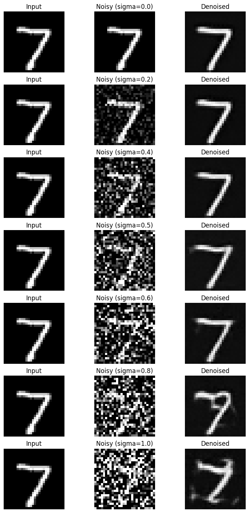
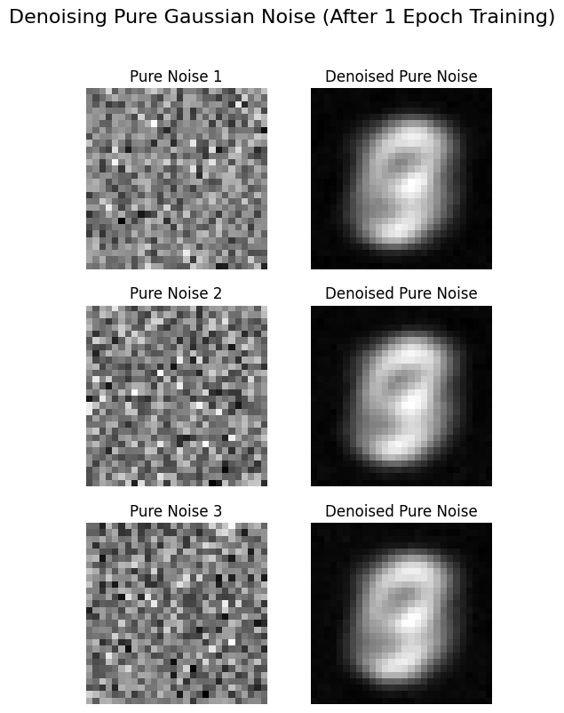
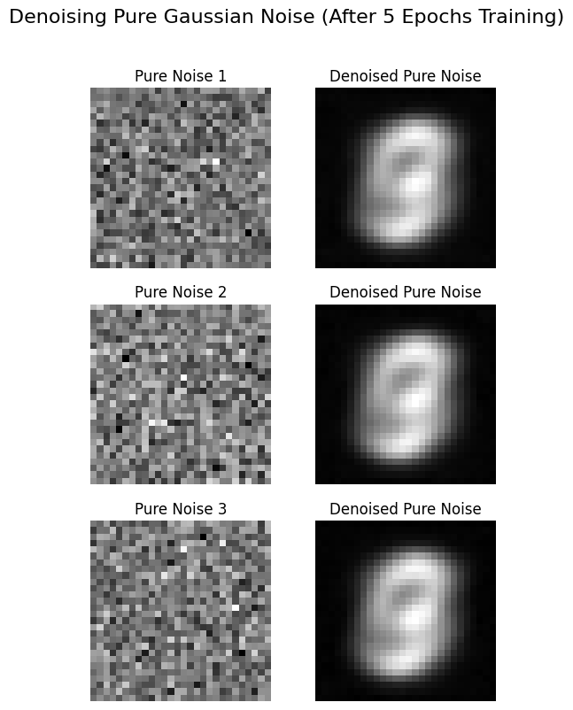
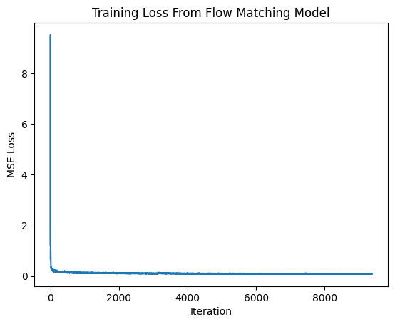
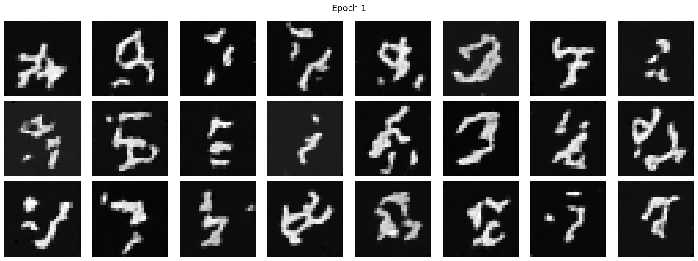
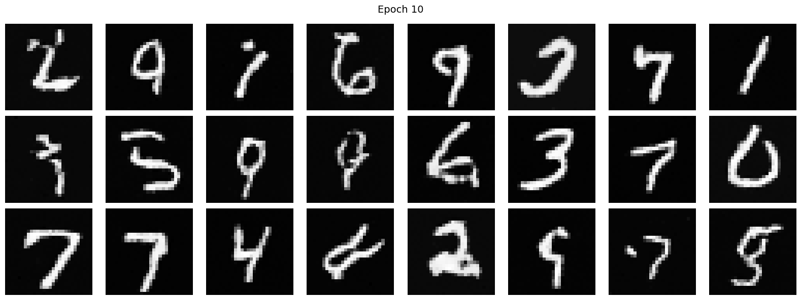
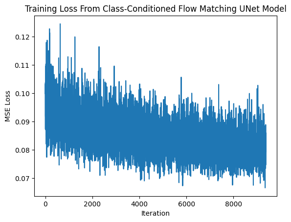
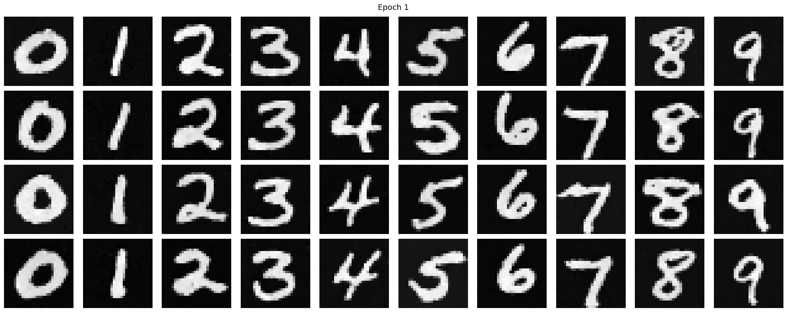
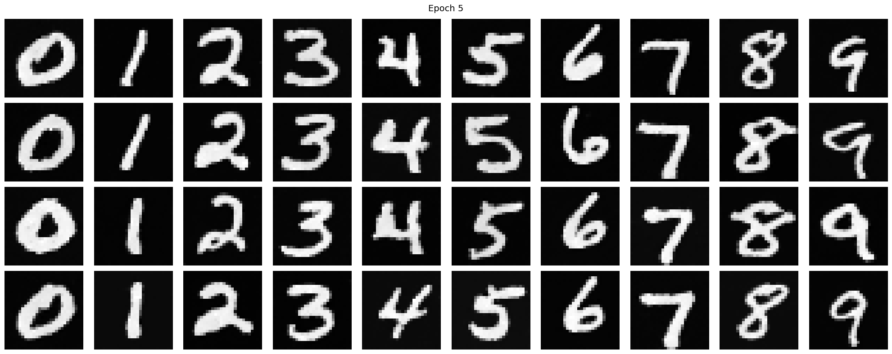
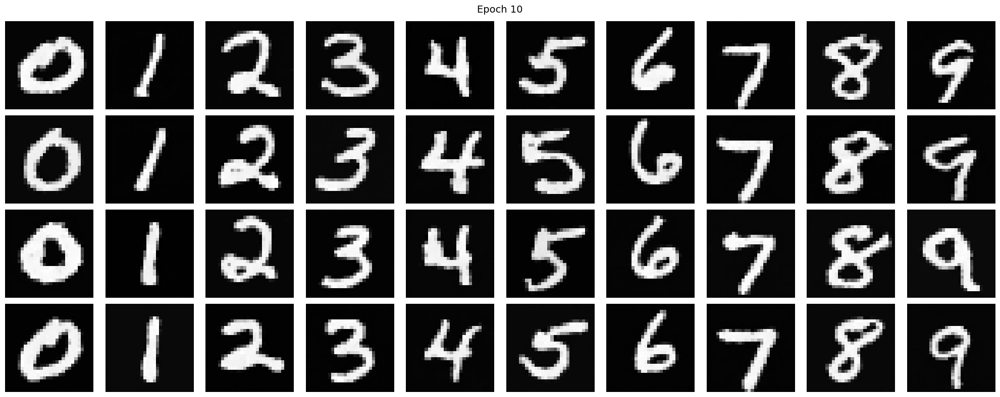

← Back
CS 180 Project 5 Part B: Flow Matching from Scratch!
Part 1.1: Implementing a Single-Step Denoising UNet
We implement the denoiser as a compact U-Net with an encoder-decoder architecture and skip connections. The encoder consists of a convolutional block followed by two downsampling blocks that reduce the input from 28x28 to a 7x7 bottleneck, which is flattened to a 1x1 latent representation and then unflattened back to 7x7. The decoder mirrors the encoder using upsampling blocks and channel-wise concatenation with corresponding encoder features to preserve spatial detail, and a final 3x3 convolution maps the features back to the original image shape.
Part 1.2: Using the UNet to Train a Denoiser
We train the UNet as a denoiser by minimizing an L2 loss that encourages the network to map a noisy image z back to its clean target x. For each training batch, we generate supervision pairs (z, x) by sampling Gaussian noise ε ~ N(0, I) and forming z = x + sigma ε for different noise levels sigma. As sigma increases from 0 to 1, the input becomes progressively noisier and the digit structure becomes harder to distinguish, which we verify by visualizing examples across the specified sigma values.
Part 1.2.1: Training
We train the UNet denoiser on MNIST by adding Gaussian noise with a fixed noise level sigma = 0.5 to clean images and optimizing an L2 loss between the denoised output and the original image. During training, noise is applied on-the-fly each time a batch is fetched so the model sees different noisy realizations across epochs, improving generalization. We use the MNIST training set with shuffled batches, train for five epochs using the Adam optimizer, and monitor convergence by plotting the training loss over iterations. We report the training loss curve and visualize denoised results on the test set after the first and fifth epochs, comparing the clean input, noisy input, and the model's output.
Part 1.2.2: Out-of-Distribution Testing
We evaluate the denoiser's robustness by testing it on noise levels different from the one used during training. Although the model was trained only with sigma = 0.5, we apply it to test images corrupted with a range of noise levels sigma ∈ [0.0, 0.2, 0.4, 0.5, 0.6, 0.8, 1.0] to assess its out-of-distribution performance. By keeping the same underlying image and varying sigma, we observe how denoising quality degrades as the noise level moves further away from the training distribution.

Part 1.2.3: Denoising Pure Noise
We further explore denoising as a generative process by training the UNet to denoise pure Gaussian noise, where the input consists solely of samples ε ~ N(0, I) with no underlying clean image structure. Using the same training setup as before, the model is trained for five epochs and evaluated after the first and fifth epochs.


When sampling from this model, the generated outputs tend to resemble blurry or averaged digit-like patterns rather than sharp, diverse digits. This behavior arises because, under an MSE loss, the model learns to predict the conditional mean of the training data; when given pure noise with no informative signal, the optimal prediction collapses toward an average over the training distribution, which corresponds to a centroid-like representation of MNIST digits.
Part 2.1: Training a Flow Matching Model and Adding Time Conditioning to UNet
We move beyond single-step denoising by training a flow matching model that iteratively transforms pure noise into clean data. In this setup, we construct intermediate states by linearly interpolating between a noise sample x₀ ~ N(0, I) and a clean image x₁, and train the UNet to predict the corresponding flow field u(xₜ, t) = x₁ - x₀ using an L2 loss. To enable the model to adapt its predictions across different interpolation times, we condition the UNet on the scalar timestep t by embedding it with small fully connected blocks and injecting the resulting features into intermediate layers via feature-wise modulation. This time-conditioned UNet learns a continuous vector field that can be integrated from noise to data, allowing for iterative and more effective generative denoising.
Part 2.2: Training the UNet
We train the time-conditioned UNet by repeatedly sampling a clean image from the training set, drawing a random timestep t in [0,1], and interpolating between pure noise and the clean image to construct a noisy input x_t. The network is trained to predict the corresponding flow x_1 - x_0 at x_t using an L2 loss, allowing it to learn how the image should evolve over time from noise to data. This process is applied across many images and timesteps using the MNIST training set with shuffled batches, and training progress is monitored by tracking the loss over the course of training.

Part 2.3: Sampling from the UNet
After training, we generate samples by iteratively applying the learned flow field starting from pure Gaussian noise. Beginning with an initial noise sample, we repeatedly update the image using the UNet’s predicted flow at evenly spaced timesteps, gradually moving the sample toward the data distribution. Although early samples may appear noisy or poorly formed, the digit structure becomes increasingly clear as training progresses, and by later epochs the model produces legible MNIST-like digits through this iterative denoising process.


Part 2.4: Sampling from the UNet
We extend the time-conditioned UNet by additionally conditioning it on the digit class to gain finer control over the generated outputs. The class label is encoded as a one-hot vector and embedded using separate fully connected blocks, analogous to the time embeddings, and injected into intermediate layers of the network through feature-wise modulation. To enable classifier-free guidance at sampling time, we randomly drop the class conditioning during training by setting the class vector to zero with a small probability, allowing the model to learn both conditional and unconditional behaviors. This combined conditioning on time and class improves sample quality and enables targeted generation of specific digits.
Part 2.5: Training the UNet
Training the class-conditioned UNet closely follows the time-conditioned setup, with the addition of a class conditioning signal. For each iteration, we sample a clean image and its corresponding label, encode the label as a one-hot vector, and randomly drop this conditioning with a small probability to support classifier-free guidance. We then sample a random timestep, interpolate between noise and the clean image to obtain x_t, and optimize the network to predict the flow using an L2 loss. This process allows the model to learn both conditional and unconditional behaviors while converging to a class-aware flow field over training.

Part 2.6: Sampling from the UNet
We generate samples from the class-conditioned UNet using classifier-free guidance to encourage alignment with the specified digit class. Starting from pure Gaussian noise, we iteratively update the sample by combining the model’s conditional and unconditional flow predictions, scaled by a guidance factor γ = 5.0. Early in training the generated digits are noisy and ambiguous, but as training progresses the samples become sharper and more class-consistent, with distinct digits emerging by later epochs. This guided sampling procedure improves both visual quality and controllability compared to unconditional generation.


